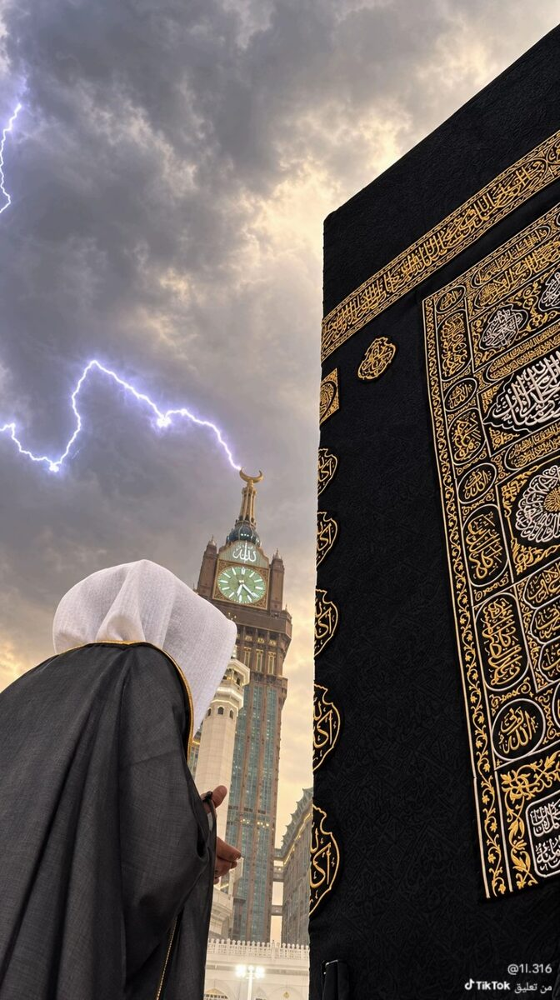

تلاوات ياسر الدوسري، مرتبة وقريبة منك.
ابحث في الكتالوج ومكتبتك
المحفوظ عندك
شغّل أي سورة من الكتالوج، أو احفظ التسجيل عندك، أو أضف تسجيلًا من رابط أو ملف.
قيد التشغيل
كل مصدر يبقى محفوظًا؛ اختيارك يحدد النسخة الافتراضية.
فيديوهات ولقطات مرتبطة بنفس التسجيل.
من نفس القارئ، السنة، السورة أو المجموعة.
تسجيل جديد

نسخة / مصدر